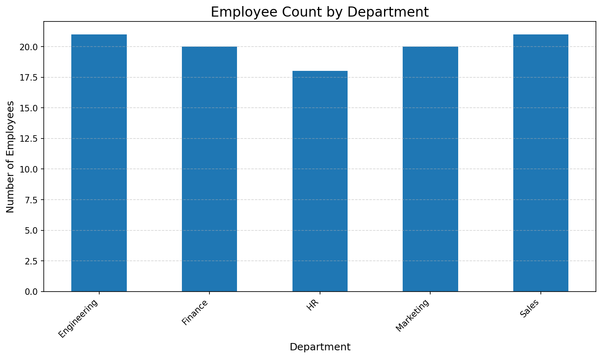

This report analyzes the distribution of employees across departments for a technology company operating in multiple regions. The goal is to support HR and executive decision-making about resource allocation, high-performing departments, and recruitment strategy.
The bar chart below shows how many employees work in each department. This helps identify over- or under-staffed areas and guides strategic workforce planning.
"""
Employee Performance Visualization
Business Case: Department-wise analysis for HR & Executives.
This script:
1. Loads employee performance data from a CSV file.
2. Calculates and prints the frequency of employees in the "Sales" department.
3. Plots the distribution of employees across departments (bar chart).
4. Saves the plot as a PNG image.
5. Generates an HTML report that includes:
- A title and short description
- The department distribution visualization
- The full Python source code (this file) for reference.
Student email (for verification in ChatGPT conversation and code):
23f2001288@ds.study.iitm.ac.in
"""
import pandas as pd
import matplotlib.pyplot as plt
from pathlib import Path
import html
# ---------- Configuration ----------
CSV_PATH = "employee_performance.csv" # <-- put your dataset file name here
PLOT_PATH = "department_distribution.png"
HTML_PATH = "employee_performance_report.html"
def main():
# ---------- 1. Load the employee data ----------
# Assumes the CSV has a column named "Department"
df = pd.read_csv(CSV_PATH)
# ---------- 2. Frequency count for the "Sales" department ----------
sales_count = (df["Department"] == "Sales").sum()
print(f"Number of employees in the 'Sales' department: {sales_count}")
# ---------- 3. Histogram / distribution of departments ----------
# For categorical data like departments, we use a bar chart of value counts.
dept_counts = df["Department"].value_counts().sort_index()
plt.figure(figsize=(10, 6))
dept_counts.plot(kind="bar")
plt.title("Employee Count by Department", fontsize=16)
plt.xlabel("Department", fontsize=12)
plt.ylabel("Number of Employees", fontsize=12)
plt.xticks(rotation=45, ha="right")
plt.grid(axis="y", linestyle="--", alpha=0.5)
plt.tight_layout()
# Save the visualization as a PNG image
plt.savefig(PLOT_PATH, dpi=150, bbox_inches="tight")
plt.close()
# ---------- 4. Create an HTML file with the visualization + code ----------
# Try to read this script source code so it can be embedded in the HTML
try:
code_text = Path(__file__).read_text(encoding="utf-8")
except NameError:
# __file__ may not exist in some environments (like notebooks),
# fallback to a simple message.
code_text = "# Source code not available via __file__ in this environment."
code_html = html.escape(code_text)
html_content = f"""<!DOCTYPE html>
<html lang="en">
<head>
<meta charset="UTF-8">
<title>Employee Performance – Department Distribution</title>
<meta name="viewport" content="width=device-width, initial-scale=1">
<style>
body {{
font-family: system-ui, -apple-system, BlinkMacSystemFont, "Segoe UI", sans-serif;
max-width: 900px;
margin: 2rem auto;
padding: 0 1rem 2rem 1rem;
line-height: 1.6;
background-color: #f9fafb;
color: #111827;
}}
h1, h2 {{
color: #111827;
}}
.card {{
background: white;
border-radius: 8px;
padding: 1.5rem;
margin-bottom: 1.5rem;
box-shadow: 0 1px 3px rgba(15, 23, 42, 0.12);
}}
img {{
max-width: 100%;
height: auto;
border-radius: 4px;
border: 1px solid #e5e7eb;
}}
pre {{
background: #0b1020;
color: #e5e7eb;
padding: 1rem;
border-radius: 6px;
overflow-x: auto;
font-size: 0.85rem;
}}
code {{
font-family: "JetBrains Mono", "Fira Code", Menlo, Consolas, monospace;
}}
.meta {{
font-size: 0.85rem;
color: #6b7280;
}}
</style>
</head>
<body>
<header class="card">
<h1>Employee Performance – Department Distribution</h1>
<p>
This report analyzes the distribution of employees across departments
for a technology company operating in multiple regions. The goal is
to support HR and executive decision-making about resource allocation,
high-performing departments, and recruitment strategy.
</p>
<p class="meta">
Generated using Python (pandas + matplotlib).<br>
Student email: 23f2001288@ds.study.iitm.ac.in
</p>
</header>
<section class="card">
<h2>Department Distribution Visualization</h2>
<p>
The bar chart below shows how many employees work in each department.
This helps identify over- or under-staffed areas and guides strategic
workforce planning.
</p>
<img src="{PLOT_PATH}" alt="Employee count by department">
</section>
<section class="card">
<h2>Python Source Code</h2>
<p class="meta">
Full script used to load data, compute the Sales department frequency,
and generate the visualization and this HTML report.
</p>
<pre><code>{code_html}</code></pre>
</section>
</body>
</html>
"""
Path(HTML_PATH).write_text(html_content, encoding="utf-8")
print(f"HTML report saved to: {HTML_PATH}")
print(f"Plot image saved to: {PLOT_PATH}")
if __name__ == "__main__":
main()